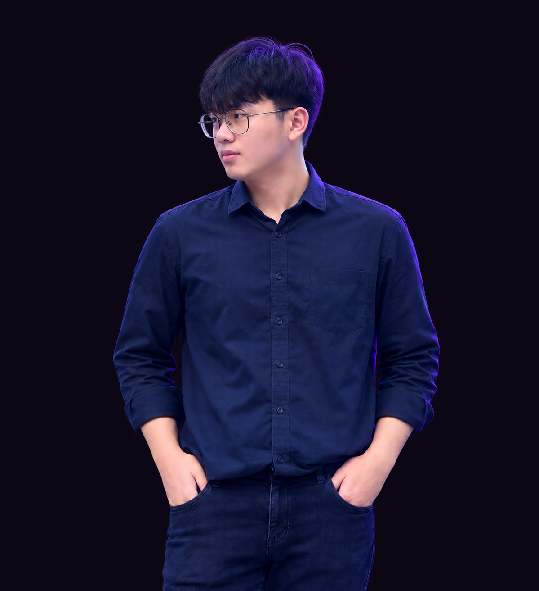

Website UMKM.
Rumah digital untuk memperkenalkan cerita, layanan, dan identitas usahamu. Dirancang agar nyaman dijelajahi di HP maupun desktop, dengan informasi yang mudah dipahami.
Diskusikan websitemu ↗DIGITAL GROWTH PARTNER / 01
Kami merancang kehadiran digital agar bisnis lokal tidak hanya terlihat, tetapi dipilih, melalui website yang memikat dan memudahkan owner serta konsumen berinteraksi.
Mulai Rp350.000 · 4 halaman + domain .com tahun pertama
Promo pembelian pertama untuk pelanggan baru.
THE DIGITAL ECOSYSTEM
Website yang punya karakter. Pengalaman yang hidup. Jalur yang mudah dari mengenal usahamu hingga menghubungimu.
Temukan kemungkinanmu ↓Rumah digital untuk memperkenalkan cerita, layanan, dan identitas usahamu. Dirancang agar nyaman dijelajahi di HP maupun desktop, dengan informasi yang mudah dipahami.
Diskusikan websitemu ↗Hidupkan identitas usahamu melalui tampilan visual, intro logo, dan animasi yang berkarakter. Gerak yang menarik perhatian tanpa menghalangi informasi.
Ceritakan konsep visualmu ↗Tampilkan foto, detail, dan pilihan produk dalam katalog yang rapi. Bantu pelanggan mengenal penawaranmu, lalu arahkan percakapan dan pemesanan ke WhatsApp.
Rencanakan katalogmu ↗Permudah pelanggan menghubungi usahamu langsung dari website untuk bertanya, berkonsultasi, atau memesan.
Arahkan pelanggan ke lokasi usaha. Tampilkan peta dan tautan petunjuk arah. Pengurusan profil Google Bisnis dibahas terpisah.
Satukan kontak, katalog, lokasi, dan media sosial dalam satu tautan. Tersedia sebagai layanan tambahan sesuai kebutuhan.
Diskusikan Link Hub ↗YOUR NEXT CHAPTER
Mulai dari fondasi yang rapi. Berkembang menjadi pengalaman yang berkarakter.
Langkah pertama untuk hadir lebih profesional.
Kesan pertama yang hidup dan lebih personal.
Pengalaman digital berani. Seperti Atuseng.
FROM IDEA TO ONLINE
Kamu fokus pada usaha.
Kami bantu wujudkan rumah digitalnya.
Pilih paket, isi kebutuhan singkat, lalu konsultasi bersama Fariz lewat WhatsApp.
Cek nama domain, lingkup pekerjaan, jadwal, revisi, dan total biaya dalam penawaran tertulis.
Lakukan pembayaran penuh sesuai total yang telah disepakati sebelum pengerjaan dimulai. Setelah pembayaran dan materi lengkap diterima, estimasi pengerjaan 1–7 hari. Kamu kemudian meninjau hasil dan memberikan revisi sesuai paket.
Setelah hasil akhir disetujui, website dipublikasikan. Kamu menerima akses, cadangan website, dan jadwal perpanjangan.
THE PERSON BEHIND ATUSENG
Nama asli saya Fariz, biasa dipanggil Atuseng. Saya membantu pemilik usaha mengubah ide menjadi website yang berkarakter dan mudah digunakan.
ATUSENG ENTREPRENEUR adalah layanan digital yang saya kelola secara mandiri. Saya bekerja secara fleksibel dari mana saja, dengan komunikasi langsung agar kebutuhan dan cerita usahamu tetap menjadi pusat setiap keputusan desain.
Dari mengenalkan bisnis sampai memudahkan pelanggan menghubungi usaha, saya ingin setiap website punya manfaat yang nyata.
Ceritakan idemu ke saya ↗
Saya memahami usaha, pelanggan, dan kebutuhanmu sebelum menentukan arah desain.
Visual dan animasi dirancang untuk memperkuat identitas tanpa menghalangi informasi.
Dari mengenal produk sampai menghubungi usaha, setiap langkah dibuat jelas dan sederhana.
GOOD QUESTIONS
Starter mencakup Home, Services/Produk, About, dan Contact sebagai empat halaman. Jika kamu memilih satu halaman panjang dengan empat bagian, kami sepakati saat konsultasi. Untuk Premium, animasi hadir di tiap halaman atau tiap bagian utama sesuai struktur yang dipilih.
Harga promo Starter mencakup pembuatan dan domain .com standar tahun pertama. Kebutuhan tambahan, pajak jika berlaku, dan total akhir disepakati sebelum kamu membayar. Promo hanya untuk pembelian pertama pelanggan baru.
Professional memiliki intro logo saat website dibuka. Premium memiliki intro dan animasi pada setiap halaman/bagian, dengan variasi gerak seperti website ini. Animasi memakai komponen yang disesuaikan dengan identitas usahamu; pemodelan 3D kompleks memerlukan penawaran tambahan.
Estimasi pengerjaan 1–7 hari setelah pembayaran penuh dan materi lengkap diterima. Jadwal final disepakati sesuai kebutuhan dan lingkup proyek.
Pembatalan dapat dilakukan selama ATUSENG ENTREPRENEUR belum membeli domain .com untuk pesananmu. Biaya jasa sebesar 10% dari pembayaran dipotong, dan sisa 90% dikembalikan. Ajukan pembatalan melalui WhatsApp Fariz agar status pembelian domain dapat diperiksa.
Logo, teks profil, daftar layanan/produk, foto, dan kontak usaha. Jadwal pengerjaan disepakati setelah kebutuhan dan materi diperiksa. Revisi berarti penyesuaian dalam lingkup awal, bukan penambahan fitur atau pergantian konsep keseluruhan.
Domain didaftarkan atas kepemilikan pelanggan. Tahun berikutnya membayar domain sesuai harga penyedia serta layanan tambahan berbayar yang disepakati. Perawatan dan perubahan konten di luar lingkup ditawarkan terpisah. Tidak ada janji aktif selamanya.
Katalog menampilkan produk dan mengarahkan pemesanan ke WhatsApp. Dashboard admin, stok otomatis, akun pelanggan, pembayaran online, dan lisensi berbayar belum termasuk. Penanaman peta lokasi juga berbeda dari jasa pengurusan profil Google Bisnis.
GREAT THINGS START WITH A HELLO
Punya usaha, ide, atau gambaran website impian? Ceritakan ke Fariz. Kita mulai dari kebutuhanmu, lalu tentukan langkah berikutnya bersama.
KONSULTASI & PEMESANANMulai lewat WhatsApp↗FARIZ · 0823 2279 6124